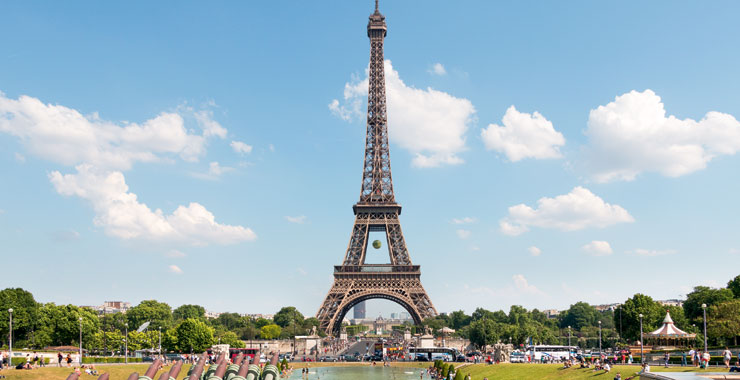
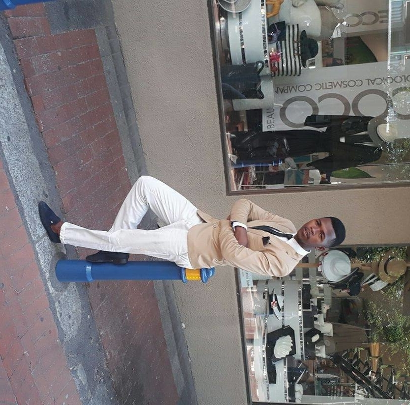
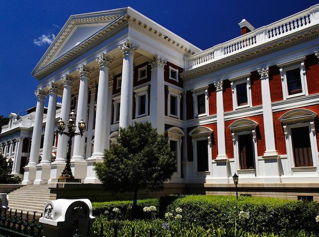
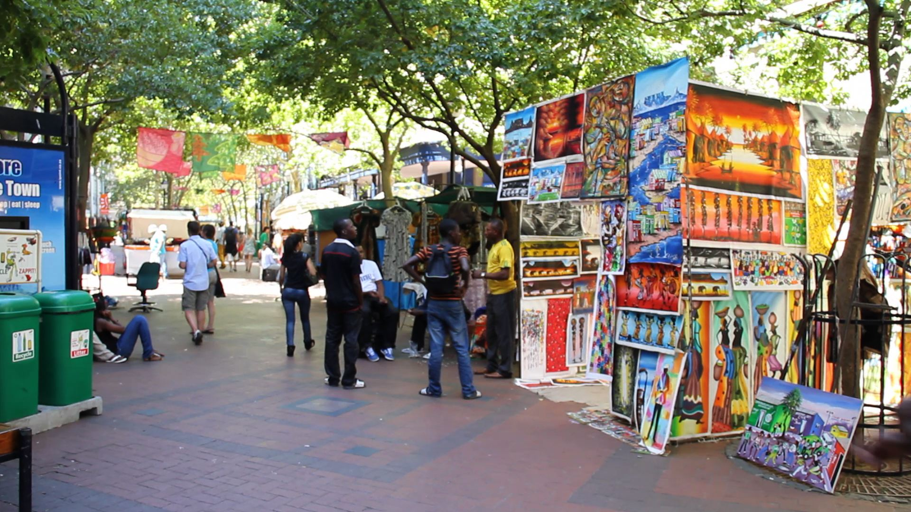

Paris
Père Lachaise you can take in the tombs of Jim Morrison, Edith Piaf,
Chopin and a host of other big, big names, and you end up at Oscar Wilde’s
tomb – a block-like item conceived by Jacob Epstein, with a modernist angel
emerging from the block. It once had male genitalia, but these have been
knocked off – not so much to keep Oscar’s mind on higher things through
eternity as to provide the cemetery manager with a paper-weight.
Siyolisa
Gxegxe

A foreign language
| English phrase | french phrase |
|---|---|
| Hello.... | bonjoer |
| What's your name ? | Comment vous appelez-vous ? |
| goodnight | bonne nuit |
Historic places in Cape Town
The Parliament
The Parliament of South Africa is South Africa's legislature and under the country's current Constitution is composed of the National Assembly and the National Council of Provinces.
The Slave Lodge

The Slave Lodge is one of the oldest buildings in Cape Town. The many names of the building over three centuries – Slave Lodge, Government Offices Building, Old Supreme Court, and SA Cultural History Museum – reflect the long and rich history of the building
St Georges Mall
Cape Town’s St Georges Mall has always been one of the main arteries through the city – although today it is no longer the congested street it once was, but a leafy, stimulating pedestrianised thoroughfare linking the Foreshore to Government Avenue and the Company Gardens